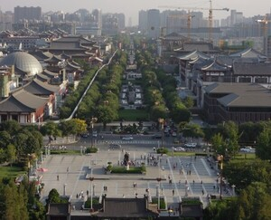
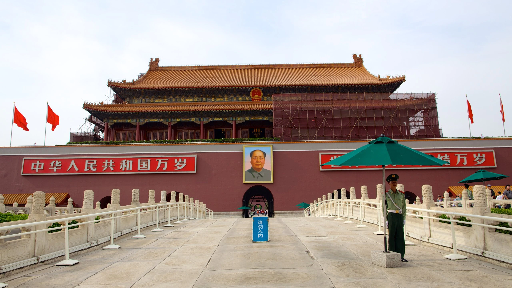

고대 중국: 상 왕조와 주 왕조를 거쳐 진시황제가 중국을 최초로 통일했다. 한 왕조 시기에는 비단길을 통해 동서 교역이 활발해지고, 한자와 유교가 문화의 중심이 되었다. 고대 중국은 청동기 문화와 봉건제, 중앙집권체제가 주요 특징이다.
역사 2

중세: 당 왕조와 송 왕조 시기에 경제와 문화가 황금기를 맞이했습니다. 원 왕조는 몽골 제국의 일부로 동서 교류가 활발했으며, 명 왕조와 청 왕조는 중화 문화를 부흥시키고 외세의 침략에 맞서 싸웠습니다. 중세 중국은 통일과 분열을 반복하며 문화적, 경제적 발전을 이루었습니다.
역사 3

근현대: 신해혁명으로 청 왕조가 무너지고 중화민국이 세워졌으나, 내전과 일본의 침략으로 혼란이 계속되었다. 1949년 중국 공산당이 내전에서 승리하여 중화인민공화국을 설립하고, 이후 개혁개방 정책을 통해 현대 중국으로 발전했다. 근현대 중국은 혁명과 개혁을 통해 급격한 사회적, 경제적 변화를 경험했다.
관광지
중국의 수도인 베이징은 역사적인 유산과 아름다운 자연경관, 현대적인 시설이 잘 어우러져 역사와 현대문화가 공존하는 매력적인 곳으로 중국을 대표하는 도시 중에 하나이다.
중국 베이징의 대표적인 관광지에는 명과 청 양대 왕조의 황궁인 자금성, 중국의 상징이라 할 수 있는 건축물인 천안문, 황제의 여름 별궁으로 세계 최대 규모를 자랑하며, 800년 가까운 역사가 있는 이화원, 중국의 대표적인 건축물이자 2,700km에 달하는 세계 7대 불가사의 건축물인 만리장성등이 있다.
관광지 2
상하이에서 가볼 만한 곳에는 수많은 중국 정원 중에서도 가장 아름답고 섬세한 정원이자 400년의 역사를 갖고 있는 예원, 상하이의 화려한 야경을 잘 볼 수 있는 곳인 와이탄, 독립운동가들의 숨결을 느낄 수 있는 임시정부 유적지 등이 있다.
관광지 3
항저우의 대표적인 관광지에는 중국의 고전적 자연미를 상징하는 곳으로 유네스코 세계 문화 유산 2011개 구역으로 나누어진 광대한 호수 지역인 서호, 영어로 '영혼의 사찰'로 알려져 있으며 현지인과 해외 방문객 모두에게 사랑받는 불교 수도원인 영은사, 고대 항저우의 흔적이자 중국의 유서 깊은 상점을 볼 수 있는 허팡거리 등이 있다.
여행 팁
방문하기 좋은 시기: 봄 (4~5월)과 가을 (9월~11월). 단 노동절 (5월 1일), 단오절 (음력 5월 5일), 중추절 (음력 8월 15일), 국경절 (10월 1일) 등 중국인구가 대규모로 이동하는 연휴에는 중국여행을 피하는 것이 좋다.
언어: 중국어. 영어는 거의 통용되지 않는다.
통화: 중국 위안.
교통: 중국이 경제개발을 하는 과정에서 교통인프라 확충에 엄청난 예산을 쏟아부었기 때문에 중국의 교통인프라는 세계적인 수준으로 좋다.